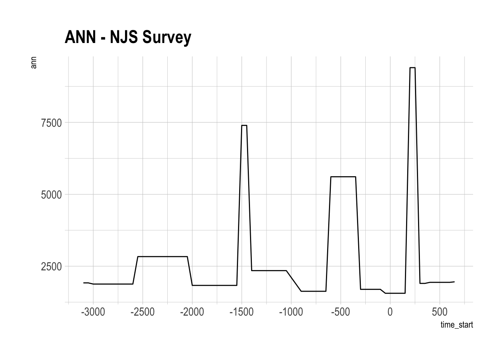
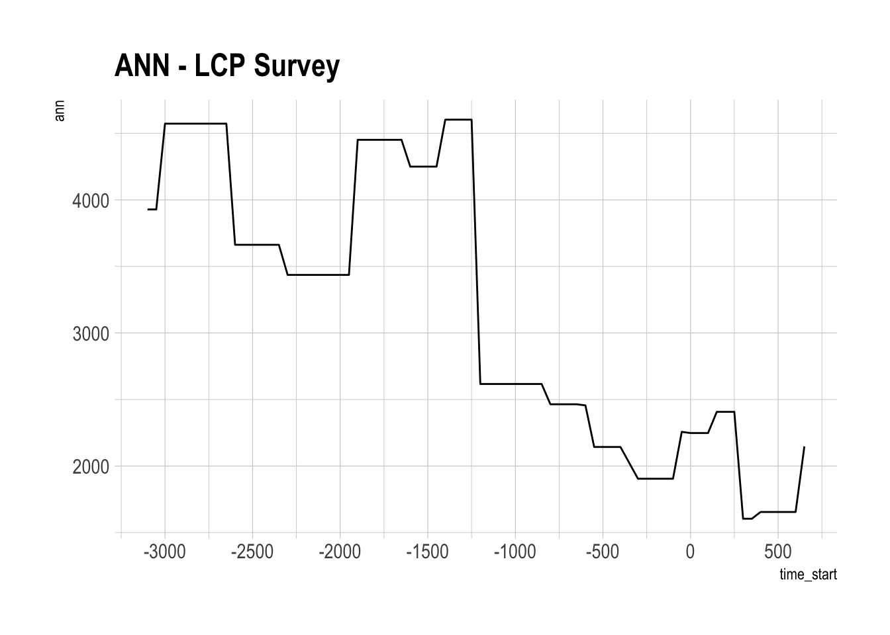
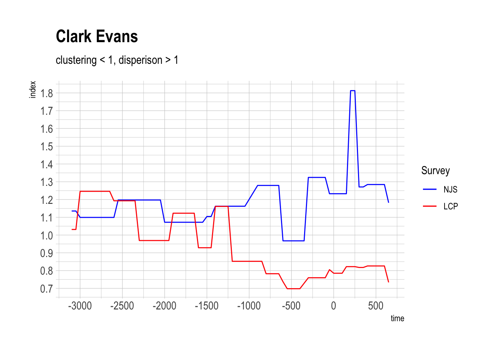
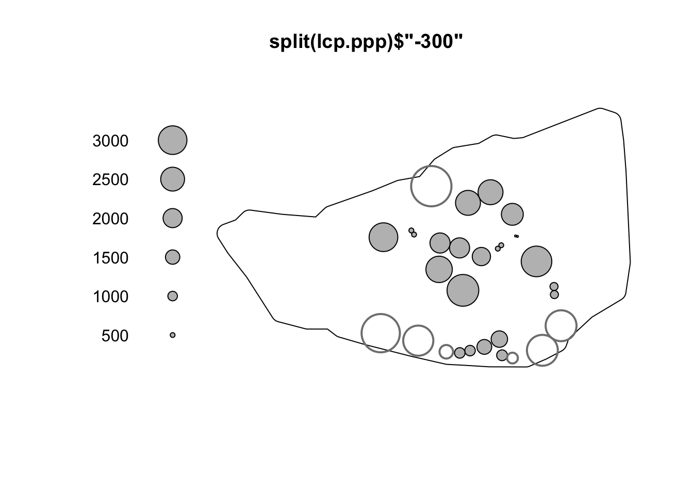
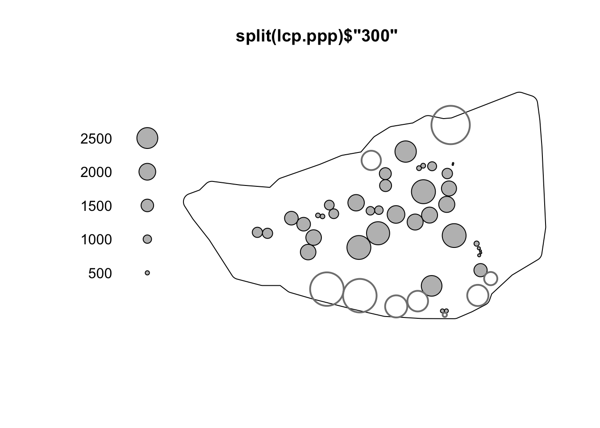
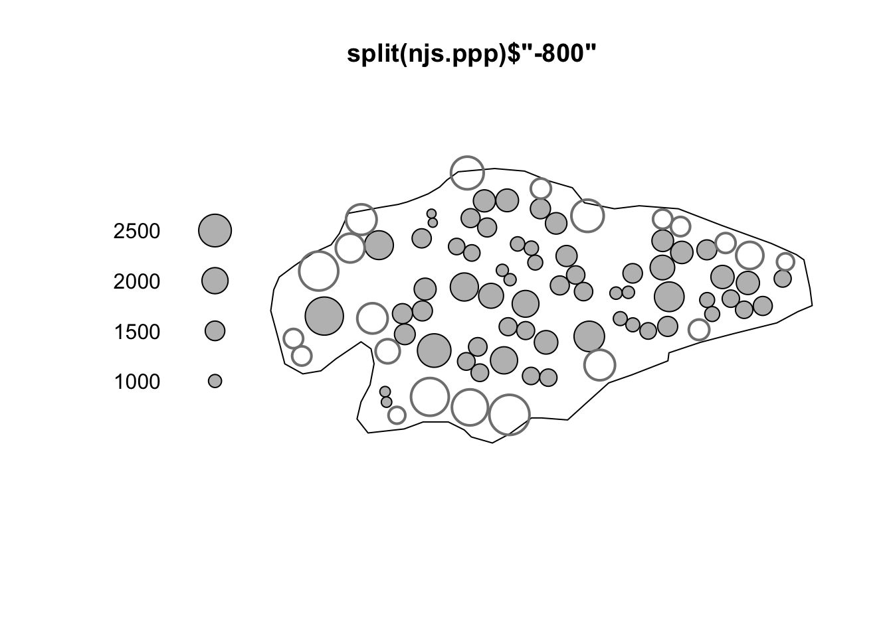
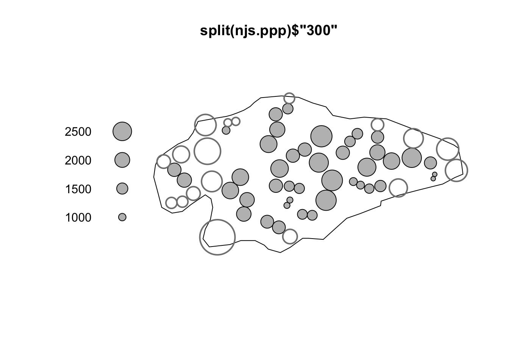

Code
library(sf)
library(spatstat)
library(tidyverse)
library(hrbrthemes)Packages
library(sf)
library(spatstat)
library(tidyverse)
library(hrbrthemes)Read Data
# read data
sites = readRDS("../data/tab/lcp_sites_LONG_SF.rds")Compute distance to k nearest neighbour
# nn
ppp = as.ppp(sites)
marks(ppp) = as.factor(sites$time_start)
ppp_list = split(ppp)
sites_list = split(sites, sites$time_start)
for (i in 1:length(sites_list)){
nn = sapply(ppp_list, nndist)
sites_list[[i]]$dist = nn[[i]]
}
# combine into one list
combined_list = do.call("rbind",sites_list)
combined_list = combined_list %>% relocate(geometry, .after = last_col())
rownames(combined_list) = NULLSave data
saveRDS(combined_list,"../data/tab/lcp_sites_LONG_SF.rds")Read Data
sites_njs = readRDS("../data/tab/njs_sites_LONG_SF.rds")
sites_lcp = readRDS("../data/tab/lcp_sites_LONG_SF.rds")Compute average nearest distance by time block
# NJS
ann_njs = sites_njs %>%
group_by(time_start) %>%
summarise(
ann = mean(dist)
)
ann_njs_sc = ann_njs %>%
mutate(
ann_sc = scales::rescale(ann_njs$ann, to = c(0,1))
) %>%
st_drop_geometry()
saveRDS(ann_njs_sc,"../data/tab/ann_sc_njs.rds")# LCP
ann_lcp = sites_lcp %>%
group_by(time_start) %>%
summarise(
ann = mean(dist)
)
ann_lcp_sc = ann_lcp %>%
mutate(
ann_sc = scales::rescale(ann_lcp$ann, to = c(0,1))
) %>%
st_drop_geometry()
saveRDS(ann_lcp_sc,"../data/tab/ann_sc_lcp.rds")Plot
# NJS
ggplot() +
geom_line(data = ann_njs, mapping = aes(x = time_start, y = ann)) +
scale_x_continuous(n.breaks = 10) +
labs(title = "ANN - NJS Survey") +
theme_ipsum()
# LCP
ggplot() +
geom_line(data = ann_lcp, mapping = aes(x = time_start, y = ann)) +
labs(title = "ANN - LCP Survey") +
scale_x_continuous(n.breaks = 10) +
theme_ipsum()
NJS
# read point pattern
njs.ppp = readRDS("../data/tab/njs_survey_PPP.rds")
# split into list
ls = split(njs.ppp)
# compute index
ce_index = sapply(ls, clarkevans)
ce_index_njs = data.frame(
index = ce_index[1,],
time = as.numeric(colnames(ce_index))
)LCP
# read point pattern
lcp.ppp = readRDS("../data/tab/lcp_survey_PPP.rds")
# split into list
ls = split(lcp.ppp)
# compute index
ce_index_lcp = sapply(ls, clarkevans)
ce_index_lcp = data.frame(
index = ce_index_lcp[1,],
time = as.numeric(colnames(ce_index_lcp))
)Plot
ggplot() +
geom_line(data = ce_index_njs, mapping = aes(x = time, y = index, color = "NJS")) +
geom_line(data = ce_index_lcp, mapping = aes(x = time, y = index, color = "LCP")) +
labs(title = "Clark Evans",
subtitle = "clustering < 1, disperison > 1" ) +
scale_color_manual(name = "Survey", values = c("NJS" = "blue", "LCP" = "red")) +
scale_x_continuous(n.breaks = 10) +
scale_y_continuous(n.breaks = 10) +
theme_ipsum()
LCP
stienen(X = split(lcp.ppp)$'-300')
stienen(X = split(lcp.ppp)$'300')
NJS
stienen(X = split(njs.ppp)$'-800')
stienen(X = split(njs.ppp)$'300')